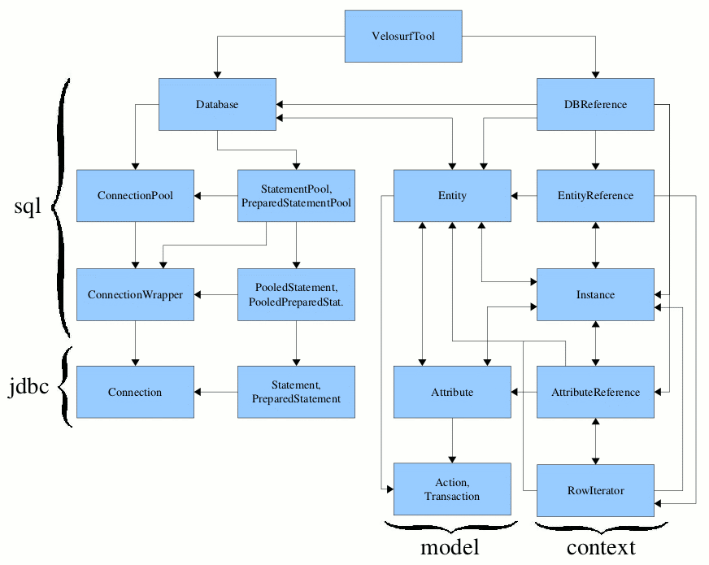

Overview
Installation
VTL reference
Configuration
Architecture
Java reference
Velosurf FAQ
Architecture
This section gives some elements on the inner architecture of Velosurf.
Here are the main packages of Velosurf:
velosurf.cachecontains the cache (used by theEntityclass).velosurf.contextcontains all the classes that are to be populated in Velocity contexts. Some of them are wrappers for internal classes (see the diagram below).velosurf.modelcontains the classes that help modelize the data model as reverse-enginered and specified in the XML configuration file.velosurf.sqlcontains all the classes dealing with the database itself via jdbc.velosurf.standalonecontains a helper class to use Velosurf in a standalone application.velosurf.toolscontains the two classes that can be used as Velocity-tools tools: HttpQueryTool and VelosurfTool.velosurf.utilcontains various utilities.
The next diagram shows the dependency relationships between the main classes of Velosurf. It should be a good introduction for someone willing to browse the api or to dig into the sources.
Some dependencies are not shown to lighten the diagram:
- almost all objects of the
modelandcontextpackages use thePooledPreparedStatementclass, and many use theDatabaseclass - the
Databaseclass itself references many classes of themodelandcontextpackages
[to be extended]